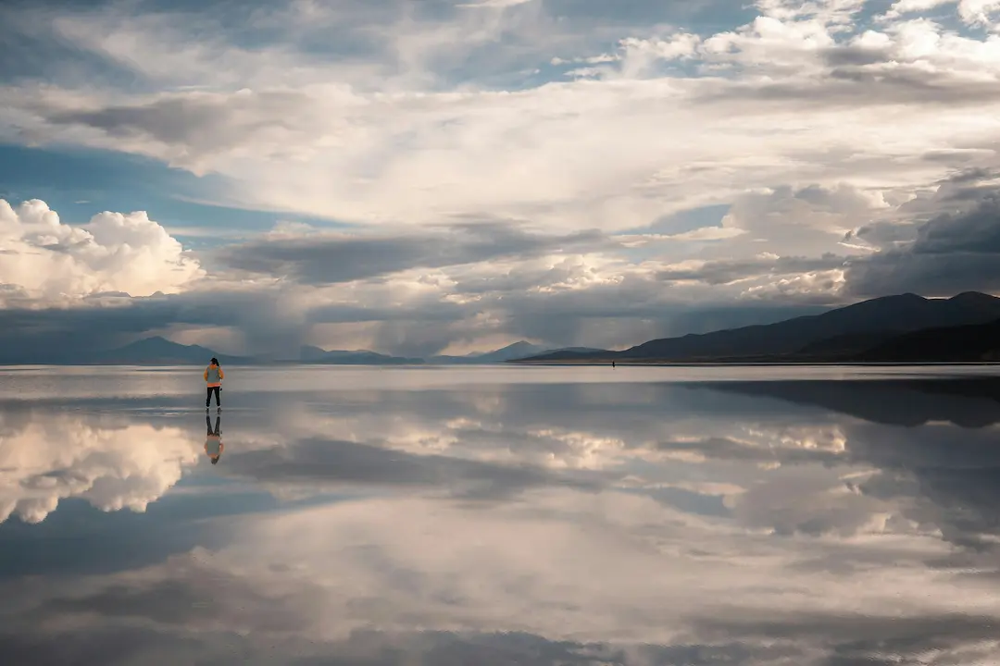
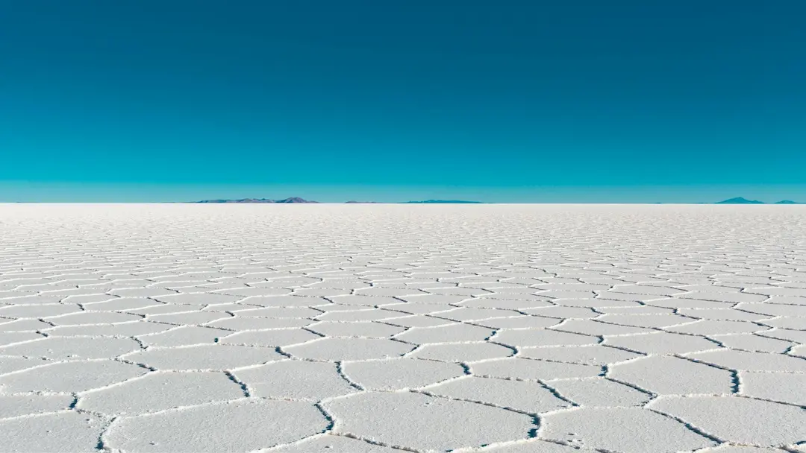
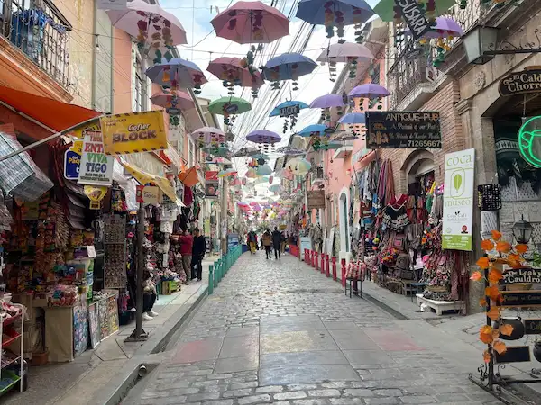

Salar de Uyuni
The world's largest salt flat and one of Bolivia's most iconic natural wonders.

Discover breathtaking landscapes, vibrant culture, and unforgettable adventures.
Bolivia offers some of South America's most diverse landscapes, from the stunning Salar de Uyuni to the vibrant streets of La Paz and the historic charm of Sucre. Whether you are seeking adventure, culture, or natural beauty, Bolivia has something for everyone.

The world's largest salt flat and one of Bolivia's most iconic natural wonders.

The highest capital city in the world, full of culture and dramatic mountain views.
Bolivia's constitutional capital known for its white colonial architecture.